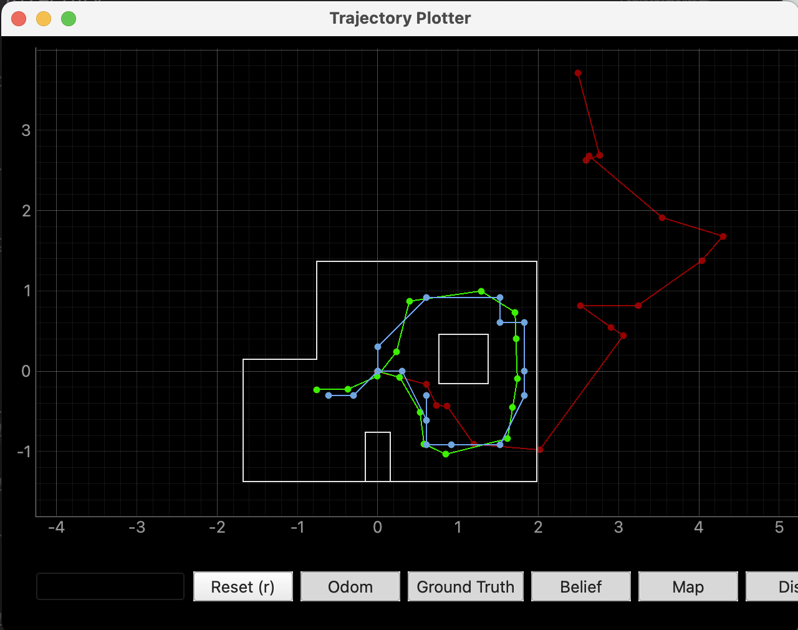
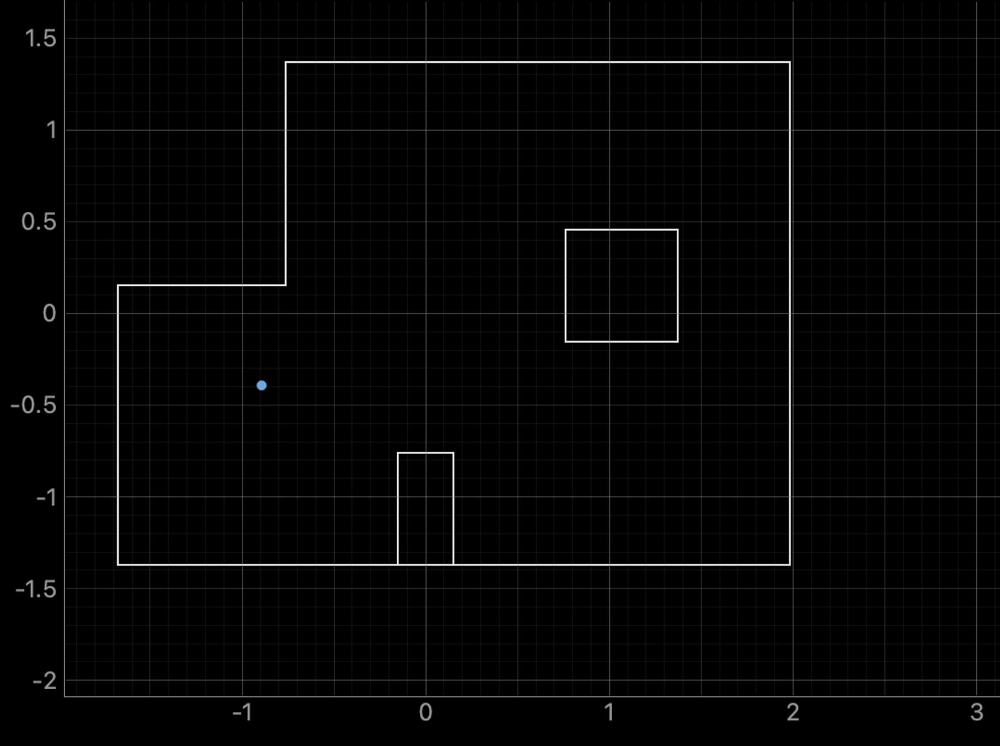
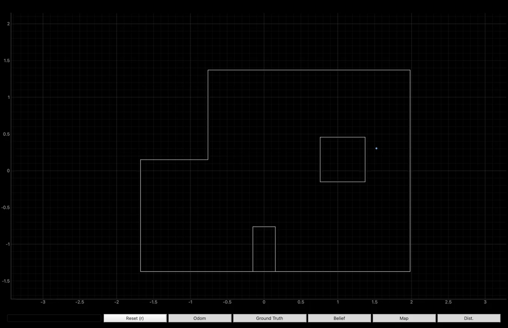
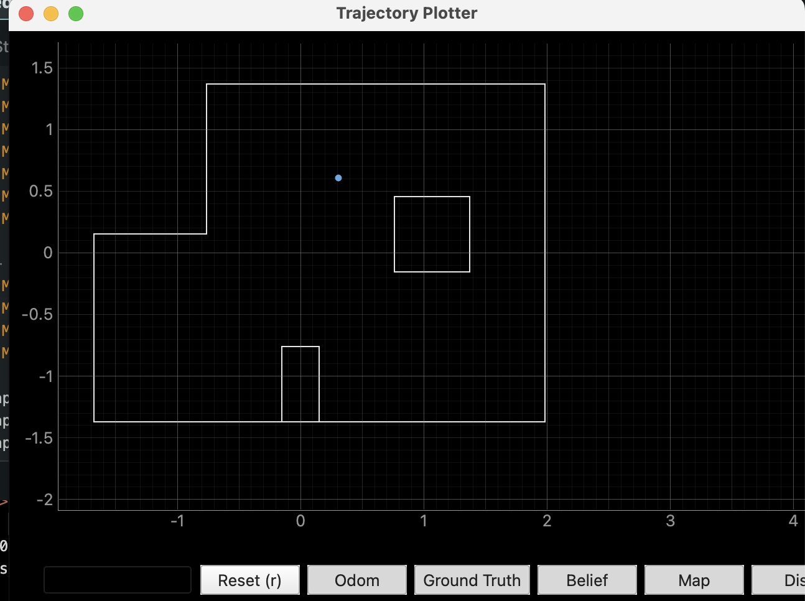
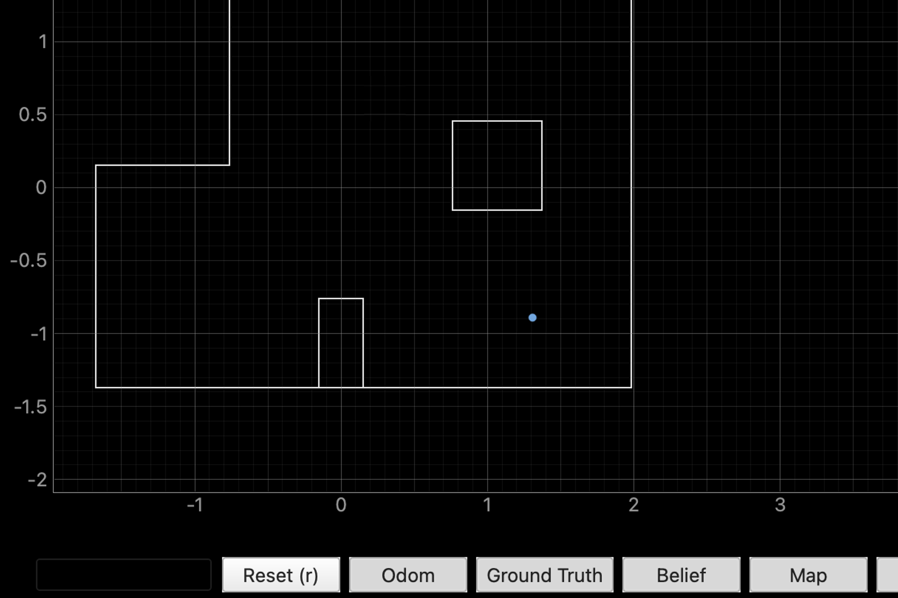

This lab takes the Bayes filter from Lab 10 and runs it on the real robot. The big difference is that we only use the update step here, not the prediction step; the motion on these robots is too noisy for the odometry model to actually help. The robot does a 360 degree scan at each of the four marked positions and the filter uses those 18 ToF readings to estimate where it is.
The command perform_observation_loop sends the START_MAPPING command over BLE, waits for the robot to complete a full rotation collecting ToF readings at each stop, then pulls the data back with SEND_MAP_DATA. The scan uses the hybrid angular-speed-PID approach from Lab 9; the robot spins in short bursts under closed-loop speed control and reads the ToF while stationary between bursts.
One issue I ran into was that each spin segment was overshooting the target 20 degrees, so instead of getting 18 evenly spaced readings over 360 degrees the robot would finish its rotation in fewer steps. Then I would only get like 4-5 readings. I fixed this by changing the termination condition from angle-based (map_total_rotation >= 360) to count-based (map_reading_count >= 18), so it always collects exactly 18 readings regardless of overshoot. Since the readings end up unevenly spaced in angle, I interpolate them back to get the exact 0, 20, 40, ... 340 degree positions that the localization module expects.
# Convert CW angles to CCW, then interpolate to 20-deg spacing
angles_ccw = [-a for a in angles_raw]
pairs = sorted(zip(angles_ccw, dists_raw))
target_angles = [i * 20.0 for i in range(18)]
distances_m = np.interp(target_angles,
[a for a,d in pairs],
[d for a,d in pairs]).tolist()
Running the provided lab11_sim.ipynb notebook with the optimized Bayes filter on the virtual robot. This confirms the filter works before introducing real-world noise.

I placed the robot at each of the four marked positions facing the same reference heading I used in Lab 9, ran a full observation loop, then ran the update step. The positions are tested in the same order as Lab 9 because I kept getting confused and already had the positions associated in my mind.

GT: (-0.914m, -0.610m). Belief: (-0.610, -0.305). Medium error.

GT: (1.524m, 0.914m). Belief: (1.829, 0.305). Highest error.

GT: (0.000m, 0.914m). Belief: (0.305, 0.610). Medium error.

GT: (1.524m, -0.914m). Belief: (1.524, -0.914). Almost no error!
My inference on this is that essentially the positions with more information, you'd expect are more accurate. But suprisingly, I think because of how medocire my scans actually are, small errors got propgated strongly. Either that or it was drifting more when I did this scan. In theory though, the filter localizes better when the robot is surrounded by distinctive geometry close by, and struggles more in open areas or corners where the sensor readings could plausibly match multiple cells.
Collaborations: Claude for fighting my code and report HTML. Sorta reused Lab 9 mapping scan code for the real robot interface.